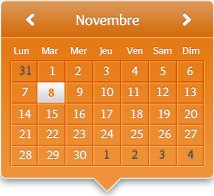
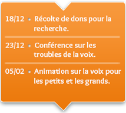
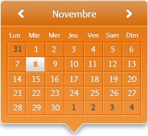
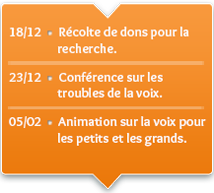

Évènements



L’unité Logopédie de la voix a vu le jour en octobre 2008. Elle est une des finalités de la section logopédie. L’unité Logopédie de la Voix est incluse dans le département 1 de la Faculté de Psychologie et des Sciences de l’Education de l’Université de Liège.
En savoir plus


A partir de Janvier 2013, l’Unité Logopédie de la Voix va collaborer avec une clinique des Etats-Unis spécialisée dans les troubles de la voix. Ils ont déjà apportés beaucoup à la recherche dans ce domaine et on espère pouvoir leur apporter aussi notre aide.
L’Unité Logopédie de la Voix a un nouveau site internet ! Vous y trouverez les dernières publications de thèse ou encore les évènementsà venir. Vous découvrirez également notre équipe ainsi que nos collaborateurs pour la recherche.
La publication d’une nouvelle thèse du professeur Dominique Morsomme sur les troubles de la voix est prévue pour début Février 2013 ! Soyez au rendez-vous ;-)
© Copyright – Justine Rahir / Janvier 2013